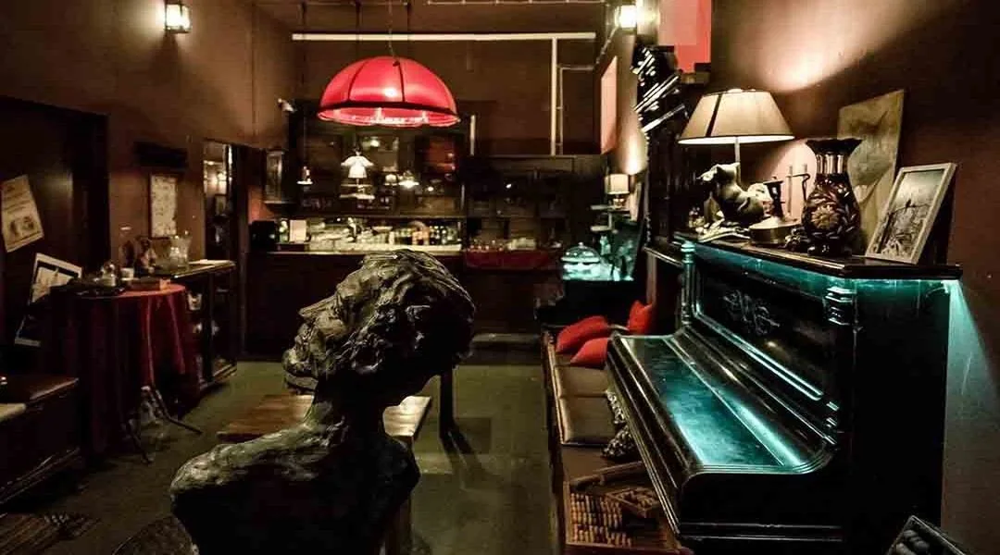
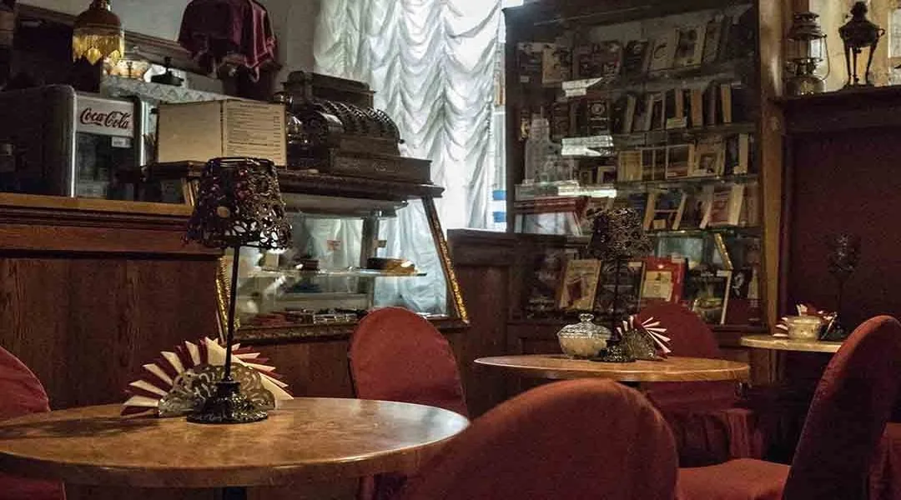
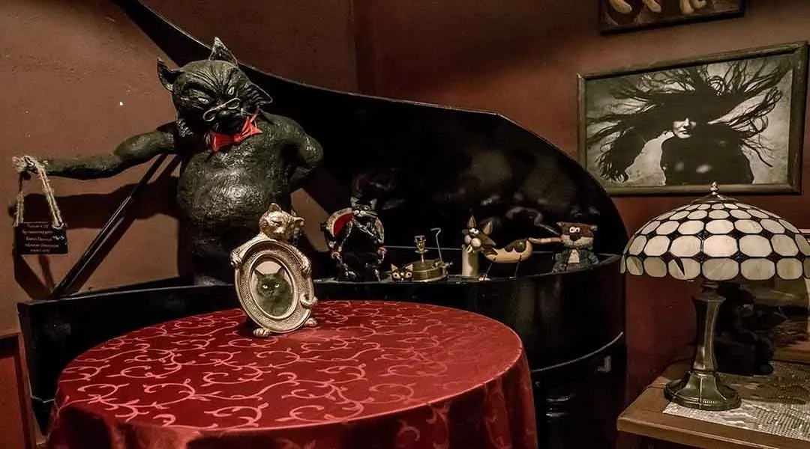
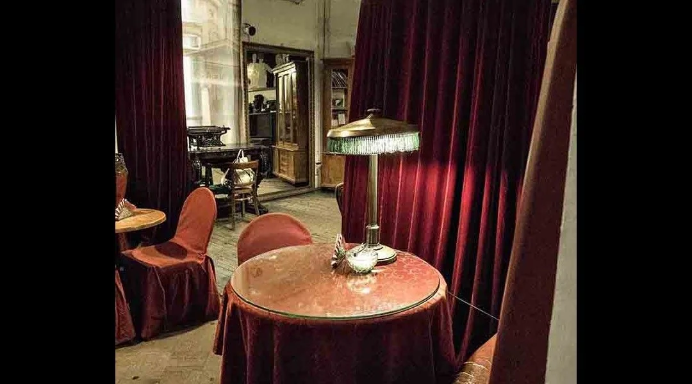

Домъ
Фотогалерея Дома
Фотолетопись дома на Большой Садовой. Музей собрал снимки, которые можно открыть в полном размере и рассмотреть до поездки.

Домъ
Фотолетопись дома на Большой Садовой. Музей собрал снимки, которые можно открыть в полном размере и рассмотреть до поездки.



